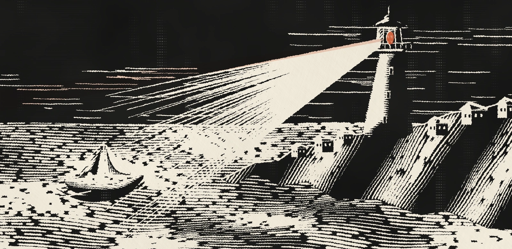
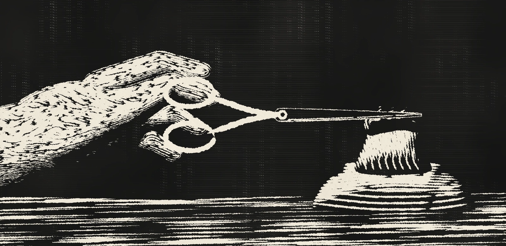

Woodcut on Laid Paper
Cut fromthe dark.
A lamp on the headland. A bell in the fog. Two stories carved out of black ink.
▶Watch the two films
Scroll to pull the print
Skip to screening ↓
A woodcut double bill
The screening room
00:48 · English
A Wick Against the Sea
A keeper has one match left. A boat is still out beyond the headland.
Scenes
English narration

Sound & incision
Listen to the hands
Bowed cello holds the sea steady. Listen separately for the scrape of the shears and the strike of a match.